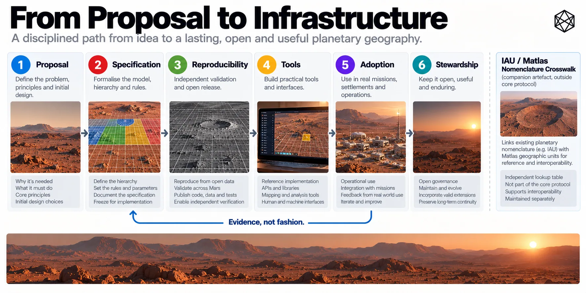

From Proposal to Infrastructure
Open Standards, Stewardship and Adoption
A book can propose a geography. It cannot make one real.
Even a technically complete design remains mostly an intellectual object until other people can implement it, test it, build software around it and trust that an identifier created today will still mean the same thing years later. Infrastructure begins when the design stops depending on its designer being present to explain it.
That is the final operating problem for Matlas.
GRID can divide Mars. BAR can address the last few metres. Triplet can provide a human interface. None of that by itself creates infrastructure. The remaining work is more prosaic: specifications, software, tests, datasets, version histories and somebody willing to maintain them for longer than anybody finds particularly exciting.
That is usually where standards become useful.
The book is not the standard
This book has been allowed to explain judgement.
Why place a persistent civil layer between coordinates and culture? Why use several scales? Why stop GRID at Click? Why change the geometry at high latitude? Why put BAR beneath GRID? Why separate the machine identity from the human interface? Those questions need reasoning.
A specification has a different job. It must remove judgement from implementation wherever two systems need the same answer. Which unit owns a point? Which reference realisation applies? How is an identifier constructed? What happens on a boundary or at the pole? Which outputs are conforming?
There is little benefit in elegant ambiguity when two computers are trying to agree about where something is.
The division of labour is simple:
The book explains and argues. The specification defines.
Matlas therefore needs normative documents separate from the narrative. If somebody wants to understand why the architecture looks this way, the book should help. If somebody wants to build it, the specification should win every argument.
Publish enough to reproduce it
The first practical requirement is openness, but openness needs to mean more than putting a PDF online.
The normative GRID and BAR specifications should be publicly available. So should the algorithms required to reproduce the geometry, the reference assumptions behind them and the rules that determine canonical identity. Then publish enough evidence for somebody else to check their work.
Reference implementations matter because prose can conceal ambiguity surprisingly well. Working code eventually has to choose what the words mean. Conformance tests matter even more: an independent implementation should be able to run known coordinates, exact boundaries, polar cases and canonical identifiers and compare its output against published reference results.
The same principle should extend to BAR and, where behaviour is normative, to Triplet and M3B profiles.
The objective is not to make everyone use the reference software. Quite the opposite. A strong open standard should make it possible to replace the reference software.
If the original code becomes obsolete, another organisation should be able to write a new implementation from the specification and prove that it behaves correctly. Reference code demonstrates one valid implementation; it does not become the geography.
That is the difference between a protocol and a product.
Conformance should also be cheap. A developer should not have to submit an implementation to a committee and wait several months to discover whether their boundary arithmetic works. Run the published suite. Compare the results. Investigate the failures.
Certification may later matter for safety-critical systems, but protocol correctness should mostly be mechanical. That lowers the cost of independent implementations, and independent implementations are one of the best defences against a supposed open standard quietly becoming dependent on one piece of software.
APIs are doors, not foundations
There should nevertheless be APIs.
A mapping application should be able to submit a coordinate and receive its GRID identity. A logistics platform should be able to resolve a BAR address. A planning tool should be able to request the geometry of a Tile or Click. A Triplet service should be able to encode and decode supported language profiles.
Those interfaces could make Matlas dramatically easier to use. They should not make the service authoritative.
An API can fail, change ownership, become expensive, disappear or simply develop a bug. Mars also seems an unnecessarily ambitious place to assume permanent network access.
So the relationship should be:
The API should make Matlas easy. The specification should make the API unnecessary.
The same principle applies to libraries, command-line tools, plug-ins and applications. Good software should hide most of the machinery we spent Chapters 9–18 exposing. A GIS can make GRID another selectable layer. A logistics application can store BAR identities without showing them to the person ordering a delivery. A scientific archive can add GRID references automatically.
If integrating Matlas requires reading this entire book, adoption has gone wrong.

Read a description of this illustration
The illustration traces the proposed process of converting an architecture into infrastructure by documenting, validating, releasing, implementing and governing its shared rules.
Libraries, schemas and documentation all matter. Boring integration work is often what separates a standard people admire from one people actually use.
Connect to the Mars we already have
One companion resource would be particularly useful because Matlas is not beginning on a nameless planet. Mars already has recognised planetary nomenclature, and Matlas should connect to it rather than absorb it.
The practical answer is a Matlas Gazetteer Crosswalk: a machine-readable bridge between recognised named features and the Matlas geometry beneath them.
For recognised IAU planetary nomenclature, the public resource could include an IAU/Matlas Nomenclature Crosswalk. The wording matters: this would be a Matlas cross-reference to recognised IAU nomenclature, not an IAU-produced Matlas standard or evidence of institutional endorsement.
Its purpose is straightforward. Search for a recognised feature and see which Matlas units contain or intersect it. Search a GRID unit and see which recognised features intersect that area. Where authoritative source information permits, the crosswalk can preserve the recognised name, feature type, coordinate or mapped extent and calculate the corresponding Matlas intersections.
Nothing is being renamed, and a feature boundary does not become a GRID boundary. The crosswalk simply prevents every GIS, archive and mapping project from having to repeat the same spatial join independently.
Keeping the dataset separate from canonical Matlas geometry also lets it evolve safely. New recognised names can be added. Source geometry can improve. Crosswalk calculations can be corrected.
None of that moves a Click.
The resource should also resist the temptation to become its own nomenclature authority. Source names remain attributed to their source. Matlas intersections remain calculated cross-references. Local or unofficial names can live in other datasets.
The purpose is connection, not annexation.
The durable asset should also be the structured data, not a pretty website. Researchers should be able to download it. GIS software should be able to ingest it. Future archives should be able to preserve it.
Interfaces age. Data lasts longer. Specifications should last longer still.
Versioning is historical integrity
Once other organisations begin storing Matlas identifiers, version numbers stop being software housekeeping. They become part of the meaning of old records.
We already have the essential principle in MGRID:1:MARS. The major geometry version identifies the rules under which that spatial identity was created. If a later change alters which identifier belongs to a physical coordinate, the geography itself has changed. That deserves a new major geometry version.
Many other changes do not. A corrected implementation bug does not mean Mars has been regridded. Neither does a better website, a new API, another Triplet profile or an updated nomenclature crosswalk.
Different artefacts therefore need separate histories. Geometry versions track canonical spatial meaning. Software versions track implementations. Language-profile versions track lexical mappings. Dataset releases track companion data. One giant version number would hide those distinctions rather than simplify them.
The deeper reason is archival continuity.
Imagine opening a maintenance record a century after it was written. The software that created it is gone. The company has disappeared. Local names have changed. Scientific reference models have improved.
The old Matlas identifier should still be interpretable.
That means old specifications must remain available rather than merely replaced. Historical conformance cases should remain preserved. Deprecated lexical profiles may need archiving. Reference transformations need provenance.
Apps are allowed to forget old releases. Civil infrastructure cannot.
Persistent identity is only useful if the history required to interpret that identity persists as well.
Adoption starts with use
A standard does not become infrastructure because somebody declares it one, nor does it require planet-wide adoption on the first day. Early credibility comes from much smaller things.
Someone builds a second implementation and obtains the same answers. A GIS project uses GRID alongside existing Mars layers. A settlement simulation uses BAR addresses for logistics. A research archive stores persistent GRID references with observations. A planning tool finds that the hierarchy reduces rather than adds friction.
Those uses expose different weaknesses from design work. Documentation that looked clear turns out not to be. An API lacks an obvious function. A hierarchy label is misunderstood. A test vector catches an implementation assumption. Something everybody thought important proves irrelevant in practice.
That feedback is valuable precisely because it comes from use rather than endorsement.
Most of it should not change the canonical architecture. Some improves documentation. Some improves software. Some belongs in a companion dataset. Some suggests an optional extension. Occasionally enough evidence may accumulate to justify a future normative change.
That is why adoption belongs in the lifecycle rather than after it.
Infrastructure becomes credible by surviving implementation.
Steward the protocol, not everything around it
Once several organisations rely on Matlas, maintenance decisions become unavoidable.
An ambiguity is discovered in the specification. Two implementations disagree. A reference transformation needs updating. A language-profile identifier collides. Somebody proposes an extension that would alter canonical behaviour. There needs to be an orderly way to deal with those cases.
The mandate can remain narrow: maintain the normative specifications; publish version and change histories; preserve old releases; maintain conformance material; coordinate technical registries and reference transformations where necessary; and provide a visible process for proposing and reviewing changes.
That is stewardship.
It does not require the Matlas steward to administer property, political borders, cultural names or settlements. Chapter 20 has already shown why those layers should remain richer and freer than the reference underneath them.
A standard also needs the ability to resist scope creep. Once a useful common layer exists, perfectly reasonable suggestions will appear: add altitude, buildings, ownership, roads, environmental status, resource licences, preferred names, perhaps half the administrative machinery of civilisation before lunch.
Many of those ideas may deserve systems of their own.
The correct answer can still be:
Yes — but not here.
Build an overlay. Create a companion dataset. Experiment with an extension. Leave the canonical core alone unless the benefit of changing it outweighs the cost imposed on everyone already using it.
Good stewardship is partly maintenance and partly refusal.
Build it so somebody else can run it
The final practical test is simple.
Imagine the original Matlas project disappears. Can another organisation obtain the specifications and reconstruct the geometry? Can it decode an old address, write a new implementation and determine which version an historical record used? Can it verify that implementation against public conformance cases? Can it preserve or replace the public services without gaining access to private databases or proprietary secrets?
If the answer is yes, the architecture has a chance of becoming infrastructure. If the answer is no, it remains somebody’s platform.
That applies to authorship as well.
I can propose Matlas, explain the design, publish the first normative documents, release reference software and maintain the initial public resources. That is a sensible starting role. It should not be a permanent technical dependency.
If Matlas ever attracts serious use, stewardship should broaden to people and organisations with better operational knowledge than the original author can possibly have: geospatial specialists, scientists, software engineers, settlement operators, linguists and eventually people with direct experience of using the system in the environment it was designed for.
There is no need to choose the final institution now. What matters is making transfer technically possible.
Keep the specifications public. Keep the data exportable. Preserve version history. Avoid hidden dependencies. Document enough that another competent group can take over.
If a spatial standard intended to survive for generations contains an implicit requirement that its inventor remain available, competent and agreeable throughout, it has acquired an impressively avoidable single point of failure.
The objective is not to preserve authorship. It is to preserve the infrastructure.
A proposal can have an author. Infrastructure needs successors.